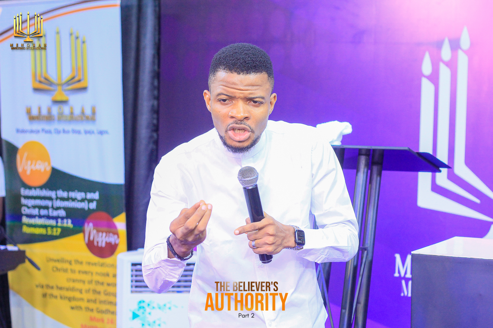

Minister Details
-
Ministry Menorah School of the Spirit Word
-
Date of Birth November 22
-
Education Urban & Regional Planning, Yabatech
-
Ordained 2015
-
Family Married to Mrs. Karounwi Itunu Louisa, blessed with a son
Featured Minister
Pastor Karounwi Damilola Gabriel
Biography
Pastor Karounwi Damilola Gabriel was born on 22nd November and raised in a Christian home. He is the Principal of Menorah School of the Spirit Word — an enclave anchored on the pursuit of the infallible words of the Father of Light. A member of the Cherubim and Seraphim Church, he is equally an interdenominational preacher with a burning desire that all souls, regardless of denomination, be fed and nurtured by the word of God.
He holds a degree from Yaba College of Technology, where he studied Urban and Regional Planning. During his campus days, he served faithfully as the Prayer Coordinator and Vice President of the C&S Unification, Yabatech Chapter (UNICASS). His commitment to service extended into his NYSC year, where he served as the State Bible Study Secretary for NCCF Kebbi State and was privileged to chair the NCCF State Conference during his tenure.
Before answering the full-time call of the gospel, he worked with a telecommunications company and a real estate firm — until he received clear divine instruction to lay down secular employment and commit entirely to ministry. He was officially ordained a Pastor in 2015, though he had already been preaching for approximately eleven years prior to his ordination.
Pastor Karounwi is a dynamic and itinerant Minister of the Gospel, fully committed to raising men of stature and ranking in Christ. His passion for this vision found concrete expression in the school he pioneered. God has wrought through him many undeniable signs and wonders, shifting paradigms and bringing to light the revelation of Christ through succinct, inspired teachings. His utmost desire is to avoid teaching his generation error — a conviction that fuels his relentless appetite for study and meditation on God's word.
"For the earth shall be filled with the knowledge of the glory of the LORD, as the waters cover the sea."
— Habakkuk 2:14 · Pastor Karounwi's Watchword
Pastor Karounwi is happily married to Mrs. Karounwi Itunu Louisa, and together they are blessed with a bouncing baby boy.
Back to All Ministers"Not unto us, O Lord, not unto us, but unto thy name give glory."
Psalm 115:1